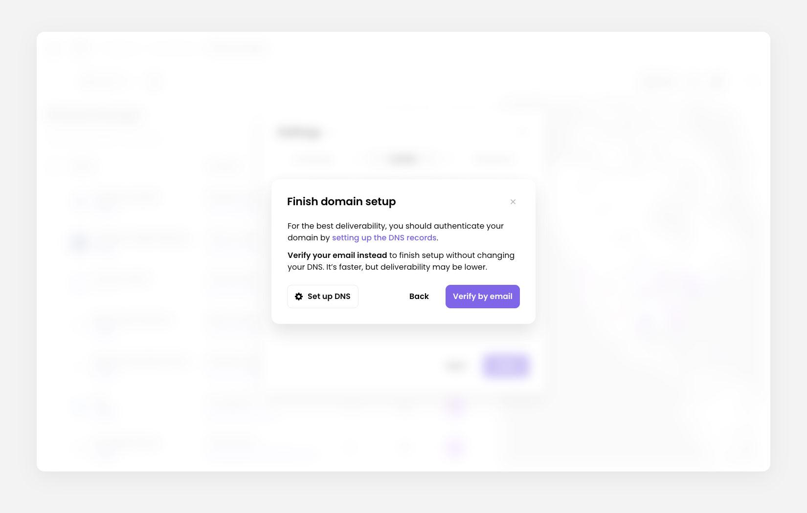
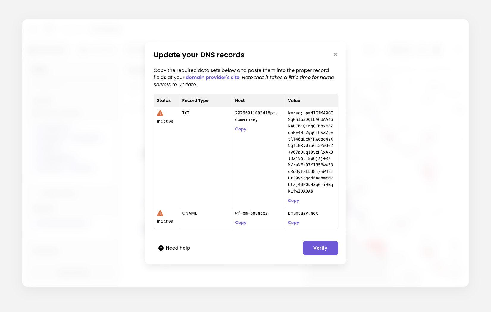
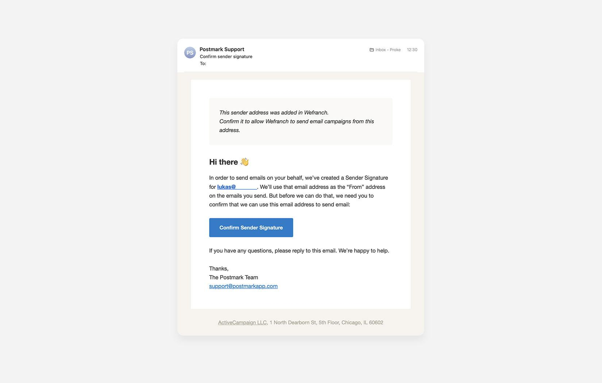

How to set up your sending domain
Add a sender
On Sender, open the email dropdown and click Add new sender.
- Enter the email address and name. Click Next.
- If the domain is already trusted, the sender is saved as authenticated and the dialog closes.
- Otherwise you land on Finish domain setup.

Authenticate the domain
This path gives you the best deliverability.
- On Finish domain setup, click Set up DNS.
- Wefranch generates DNS records for your email domain.
- Copy those values into your domain's DNS settings, such as GoDaddy, and click Verify in the Update your DNS records dialog.
- Back on the Sender step, the status reads DNS verification in progress. DNS changes can take up to 24 hours to verify.
- Click Review DNS setup at any time to reopen the records.

Verify the email instead
This path is faster. You confirm the sender by email instead of adding DNS records. Deliverability can be lower than with DNS.
- On Finish domain setup, click Verify by email.
- Wefranch sends a verification email to that inbox.
- Open the email and click Confirm Sender Signature.
- Return to Wefranch and click Done.
If the Sender step still says Awaiting email verification, check the inbox and use the link in that email.
